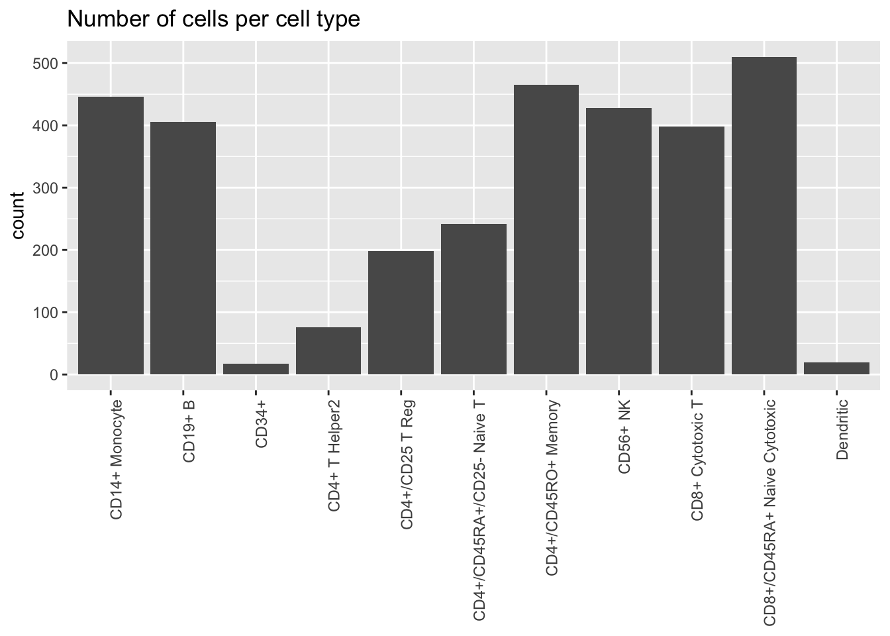
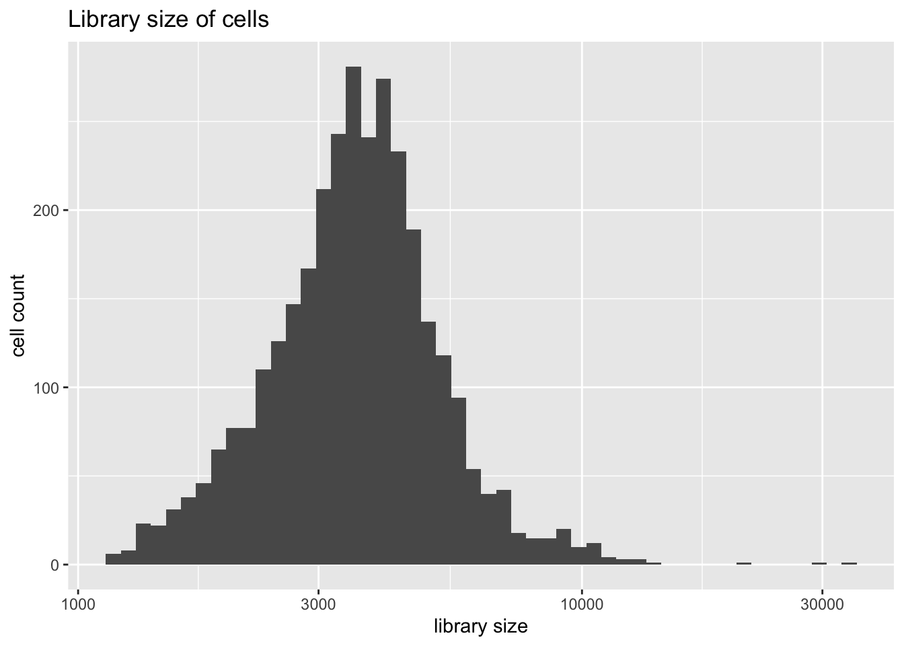
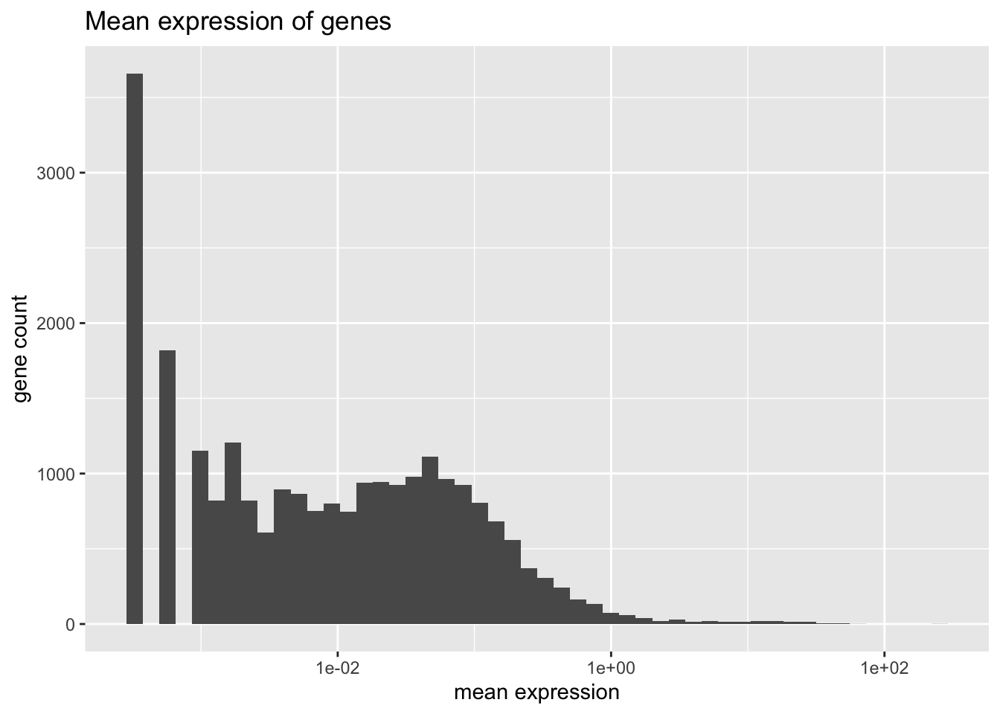
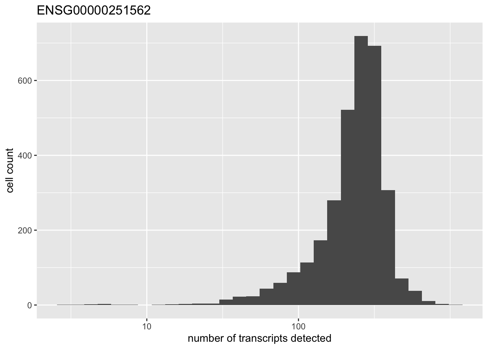

Last updated: 2020-02-28
Checks: 6 0
Knit directory: scFLASH/
This reproducible R Markdown analysis was created with workflowr (version 1.2.0). The Report tab describes the reproducibility checks that were applied when the results were created. The Past versions tab lists the development history.
Great! Since the R Markdown file has been committed to the Git repository, you know the exact version of the code that produced these results.
Great job! The global environment was empty. Objects defined in the global environment can affect the analysis in your R Markdown file in unknown ways. For reproduciblity it’s best to always run the code in an empty environment.
The command set.seed(20181103) was run prior to running the code in the R Markdown file. Setting a seed ensures that any results that rely on randomness, e.g. subsampling or permutations, are reproducible.
Great job! Recording the operating system, R version, and package versions is critical for reproducibility.
Nice! There were no cached chunks for this analysis, so you can be confident that you successfully produced the results during this run.
Great! You are using Git for version control. Tracking code development and connecting the code version to the results is critical for reproducibility. The version displayed above was the version of the Git repository at the time these results were generated.
Note that you need to be careful to ensure that all relevant files for the analysis have been committed to Git prior to generating the results (you can use wflow_publish or wflow_git_commit). workflowr only checks the R Markdown file, but you know if there are other scripts or data files that it depends on. Below is the status of the Git repository when the results were generated:
Ignored files:
Ignored: .DS_Store
Ignored: .Rhistory
Ignored: .Rproj.user/
Ignored: code/initialization/
Ignored: data/.DS_Store
Ignored: data/10x/
Ignored: data/Ensembl2Reactome.txt
Ignored: data/droplet.rds
Ignored: data/mus_pathways.rds
Ignored: output/backfit/
Ignored: output/final_montoro/
Ignored: output/lowrank/
Ignored: output/prior_type/
Ignored: output/pseudocount/
Ignored: output/pseudocount_redux/
Ignored: output/size_factors/
Ignored: output/var_type/
Untracked files:
Untracked: analysis/NBapprox.Rmd
Untracked: analysis/trachea4.Rmd
Untracked: code/alt_montoro/
Untracked: code/missing_data.R
Untracked: code/pulseseq/
Untracked: code/trachea4.R
Untracked: data-raw/10x_assigned_cell_types.R
Untracked: data-raw/pbmc.R
Untracked: output/alt_montoro/
Untracked: output/pulseseq_fit.rds
Unstaged changes:
Modified: .gitignore
Modified: code/utils.R
Note that any generated files, e.g. HTML, png, CSS, etc., are not included in this status report because it is ok for generated content to have uncommitted changes.
These are the previous versions of the R Markdown and HTML files. If you’ve configured a remote Git repository (see ?wflow_git_remote), click on the hyperlinks in the table below to view them.
| File | Version | Author | Date | Message |
|---|---|---|---|---|
| Rmd | 614e45e | Jason Willwerscheid | 2020-02-28 | wflow_publish(“analysis/pbmc.Rmd”) |
suppressMessages(library(SingleCellExperiment))
suppressMessages(library(Matrix))
suppressMessages(library(tidyverse))
load("data/10x/Sce_Dataset2.RData")
load("data/10x/Assigned_Cell_Types_Dataset2.RData")
pbmc <- Matrix(counts(sce))
# Remove genes with all zero counts.
pbmc <- pbmc[rowSums(pbmc) > 0, ]
source("./code/utils.R")To compare EBMF with the 18 methods discussed in Sun et al. (2019), I plan to run flashier on their PBMC 3k dataset. (Of the datasets they consider, this is the UMI-based dataset that benefits from the most detailed analysis).
The dataset was introduced by Zheng et al. (2017) and subsequently analyzed in Freytag et al. (2018). It can be obtained as Dataset 2 here. Cell types can be inferred by running the code provided in the latter paper’s companion repository.
The dataset includes counts for 24,565 genes (after removing genes for which all counts are zero) and 3,205 cells. Only 4.9% of all counts are nonzero. The data takes up 46 MB when loaded into memory as a sparse Matrix object.
Freytag et al. assign each cell to one of 11 cell types:
cell.type <- assigned_cell_types@listData$Assigned_CellType
#levels(cell.type) <- sapply(levels(cell.type), str_trunc, 10)
plot.category(cell.type, title = "Number of cells per cell type")
Library size is distributed as follows.
plot.libsize(pbmc)
There are three extreme outliers, all of which are variations on the CD4+ theme. Since I want to compare results to those given in Sun et. al, I won’t remove them.
table(cell.type[which(colSums(pbmc) > 20000)])#>
#> CD14+ Monocyte CD19+ B
#> 0 0
#> CD34+ CD4+ T Helper2
#> 0 1
#> CD4+/CD25 T Reg CD4+/CD45RA+/CD25- Naive T
#> 0 1
#> CD4+/CD45RO+ Memory CD56+ NK
#> 1 0
#> CD8+ Cytotoxic T CD8+/CD45RA+ Naive Cytotoxic
#> 0 0
#> Dendritic
#> 0Mean expression is distributed as follows.
plot.meanexp(pbmc)
There is one outlying gene. Its expression is unimodally distributed.
high.exp <- names(which(rowMeans(pbmc) > 200))
for (gene in high.exp) {
plot(plot.gene(pbmc, gene))
}
I remove all genes with nonzero counts in fewer than ten of the 3205 cells. This leaves a total of 9804 genes.
Next, I normalize and transform the data. My default approach is to use library-size normalization followed by alog1p transformation. Other approaches will be explored in subsequent analyses.
sessionInfo()#> R version 3.5.3 (2019-03-11)
#> Platform: x86_64-apple-darwin15.6.0 (64-bit)
#> Running under: macOS Mojave 10.14.6
#>
#> Matrix products: default
#> BLAS: /Library/Frameworks/R.framework/Versions/3.5/Resources/lib/libRblas.0.dylib
#> LAPACK: /Library/Frameworks/R.framework/Versions/3.5/Resources/lib/libRlapack.dylib
#>
#> locale:
#> [1] en_US.UTF-8/en_US.UTF-8/en_US.UTF-8/C/en_US.UTF-8/en_US.UTF-8
#>
#> attached base packages:
#> [1] parallel stats4 stats graphics grDevices utils datasets
#> [8] methods base
#>
#> other attached packages:
#> [1] flashier_0.2.2 forcats_0.4.0
#> [3] stringr_1.4.0 dplyr_0.8.0.1
#> [5] purrr_0.3.2 readr_1.3.1
#> [7] tidyr_0.8.3 tibble_2.1.1
#> [9] ggplot2_3.2.0 tidyverse_1.2.1
#> [11] Matrix_1.2-15 SingleCellExperiment_1.4.1
#> [13] SummarizedExperiment_1.12.0 DelayedArray_0.8.0
#> [15] BiocParallel_1.16.6 matrixStats_0.54.0
#> [17] Biobase_2.42.0 GenomicRanges_1.34.0
#> [19] GenomeInfoDb_1.18.2 IRanges_2.16.0
#> [21] S4Vectors_0.20.1 BiocGenerics_0.28.0
#>
#> loaded via a namespace (and not attached):
#> [1] httr_1.4.0 jsonlite_1.6 foreach_1.4.4
#> [4] modelr_0.1.5 assertthat_0.2.1 mixsqp_0.3-17
#> [7] GenomeInfoDbData_1.2.0 cellranger_1.1.0 yaml_2.2.0
#> [10] ebnm_0.1-24 pillar_1.3.1 backports_1.1.3
#> [13] lattice_0.20-38 glue_1.3.1 digest_0.6.18
#> [16] XVector_0.22.0 rvest_0.3.4 colorspace_1.4-1
#> [19] htmltools_0.3.6 pkgconfig_2.0.2 broom_0.5.1
#> [22] haven_2.1.1 zlibbioc_1.28.0 scales_1.0.0
#> [25] whisker_0.3-2 git2r_0.25.2 generics_0.0.2
#> [28] withr_2.1.2 ashr_2.2-38 lazyeval_0.2.2
#> [31] cli_1.1.0 magrittr_1.5 crayon_1.3.4
#> [34] readxl_1.3.1 evaluate_0.13 fs_1.2.7
#> [37] MASS_7.3-51.1 doParallel_1.0.14 nlme_3.1-137
#> [40] truncnorm_1.0-8 xml2_1.2.0 tools_3.5.3
#> [43] hms_0.4.2 munsell_0.5.0 irlba_2.3.3
#> [46] compiler_3.5.3 rlang_0.4.2 grid_3.5.3
#> [49] RCurl_1.95-4.12 iterators_1.0.10 rstudioapi_0.10
#> [52] labeling_0.3 bitops_1.0-6 rmarkdown_1.12
#> [55] codetools_0.2-16 gtable_0.3.0 R6_2.4.0
#> [58] lubridate_1.7.4 knitr_1.22 workflowr_1.2.0
#> [61] rprojroot_1.3-2 pscl_1.5.2 stringi_1.4.3
#> [64] SQUAREM_2017.10-1 Rcpp_1.0.1 tidyselect_0.2.5
#> [67] xfun_0.6